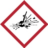
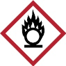
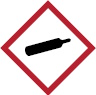
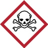
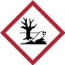

2 Begriffsbestimmungen
Im Sinne dieser DGUV Regel werden folgende Begriffe bestimmt:
- Tätigkeiten mit Reinigungs- und Pflegemitteln sind das Gebrauchen, Verbrauchen, Lagern, Aufbewahren, Verarbeiten, Abfüllen, Umfüllen, Dosieren, Mischen, Entfernen, Entsorgen, Vernichten und innerbetriebliche Befördern von Reinigungs- und Pflegemitteln.
- Verwenden – Reinigungs- und Pflegemittel werden eingesetzt, um Verschmutzungen zu beseitigen bzw. einen Schutzfilm zu erzeugen. Sie können neben ihrer reinigenden Wirkung auch desinfizierend wirken.
- Produkte von Reinigungs- und Pflegemitteln werden in Produktgruppen zusammengefasst, dazu gehören u. a.:
- Sanitärreiniger
- Grundreiniger
- Desinfektionsreiniger
- Unterhaltsreiniger
- Emulsion/Dispersion
- Glasreiniger
- Holz- und Steinpflegemittel
- Rohrreiniger
- Fassadenreiniger
- Produktgruppen fassen solche Produkte zusammen, die gleichartige Zusammensetzungen, Gefährdungen und Schutzmaßnahmen haben.
- Gefahrstoffe – Reinigungs- und Pflegemittel (Produkte) sind Gefahrstoffe, wenn sie mindestens ein Gefährlichkeitsmerkmal aufweisen oder wenn beim Umgang gefährliche Stoffe (Stoffe mit mindestens einem Gefährlichkeitsmerkmal) entstehen oder freigesetzt werden, Produkte die explosionsfähig sind sowie solche, die auf sonstige Weise chronisch schädigen.
Tabelle 1: Gefahrenpiktogramme
 |
 |
 |
 |
 |
 |
 |
 |
 |
| GHS01 |
GHS02 |
GHS03 |
GHS04 |
GHS05 |
GHS06 |
GHS07 |
GHS08 |
GHS09 |
Explo-
dierende
Bombe |
Flamme |
Flamme
über einem
Kreis |
Gasflasche |
Ätzwirkung |
Toten-
kopf mit
gekreuzten
Knochen |
Ausrufe-
zeichen |
Gesundheits-
gefahr |
Umwelt |
- GISBAU ist das Gefahrstoffinformationssystem der Berufsgenossenschaft der Bauwirtschaft
(www.gisbau.de), es stellt unter anderem den GISCODE und WINGIS zur Verfügung.
- WINGIS ist die Gefahrstoffsoftware der Berufsgenossenschaft der Bauwirtschaft
(www.wingisonline.de bzw. www.wingismobile.de)
- GISCODE ist ein System, das die Gefährdungen und Maßnahmen bei Tätigkeiten mit Reinigungs- und Pflegemitteln in einer überschaubaren Anzahl von Produktgruppen zusammenfasst.
- TRGS ist die Abkürzung Technische Regeln für Gefahrstoffe, die dazu den Stand der Technik, Arbeitsmedizin und Arbeitshygiene sowie sonstige gesicherte wissenschaftliche Erkenntnisse für Tätigkeiten mit Gefahrstoffen, einschließlich deren Einstufung und Kennzeichnung wiedergeben.